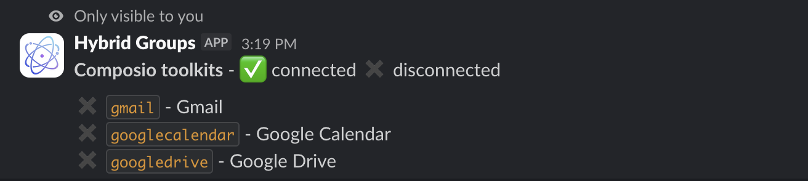

Service connectors
Hybrid Groups connects to popular services like Gmail, Notion, Figma, etc. through Composio, which provides access to 250+ services called toolkits. Users authorize access to their service accounts via OAuth or API keys. Hybrid Groups agents use Composio MCP servers to access these services on behalf of individual users.
Composio API key
Creating MCP servers via the Composio API requires a Composio API key. Create an account at Composio, get an API key from the developer dashboard and add it to project's .env file:
COMPOSIO_API_KEY=...
Setup MCP servers
Input for creating Composio MCP servers is a JSON file like the following toolkits.jsonfile. Keys are Composio toolkit names (lowercase), values contain the tools that the corresponding MCP server should expose.
{
"gmail": {
"display_name": "Gmail",
"tools": [
"GMAIL_FETCH_EMAILS",
"GMAIL_GET_ATTACHMENT",
"GMAIL_CREATE_EMAIL_DRAFT",
"GMAIL_DELETE_DRAFT",
"GMAIL_LIST_DRAFTS",
"GMAIL_LIST_LABELS"
]
},
"googlecalendar": {
"display_name": "Google Calendar",
"tools": [
"GOOGLECALENDAR_FIND_EVENT",
"GOOGLECALENDAR_CREATE_EVENT"
]
},
"googledrive": {
"display_name": "Google Drive",
"tools": [
"GOOGLEDRIVE_CREATE_FILE",
"GOOGLEDRIVE_CREATE_FOLDER",
"GOOGLEDRIVE_DOWNLOAD_FILE",
"GOOGLEDRIVE_GET_REVISION",
"GOOGLEDRIVE_LIST_FILES",
"GOOGLEDRIVE_LIST_REVISIONS",
"GOOGLEDRIVE_MOVE_FILE",
"GOOGLEDRIVE_UPLOAD_FILE",
"GOOGLEDRIVE_COPY_FILE",
"GOOGLEDRIVE_CREATE_FILE_FROM_TEXT",
"GOOGLEDRIVE_EDIT_FILE",
"GOOGLEDRIVE_FIND_FILE",
"GOOGLEDRIVE_FIND_FOLDER"
]
}
}
Tip
To get a list of available tools for a given <toolkit>, run:
python -m hygroup.scripts.composio tools <toolkit>
Create Composio MCP servers with:
python -m hygroup.scripts.composio setup --toolkit-config-path toolkits.json
You should now see a Composio configuration at .data/composio/config.json. When running the /hygroup-connect command in Slack

you should see the following output:

Authorize access
Run the /hygroup-connect <toolkit> command in Slack to initiate the authorization flow for a service identified by <toolkit>. For example, running /hygroup-connect gmail returns a link to initiate the OAuth flow for Gmail:

Click on the link and follow the instructions on the OAuth consent screen to authorize access. After successful authorization, the /hygroup-connect command should show the gmail toolkit as  connected:
connected:

Access restrictions
An agent using the gmail toolkit's MCP server can now access your Gmail account when you interact with the agent. Other users do not have access to your Gmail account when interacting with the same agent. They can access their own Gmail accounts after they have authorized access. In other words, authorizing access to a user's service account is done on a per-user basis, and not globally for the application.